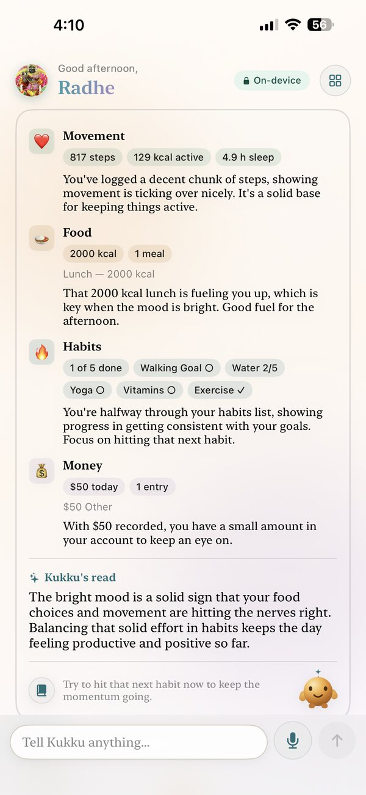
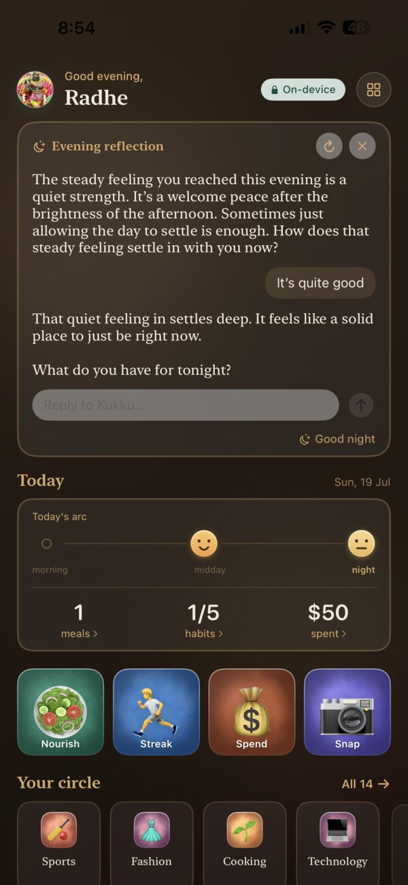

Your whole day, one glance
A home screen that reads across meals, habits, money and movement — all on-device.

On-device. Private. Agentic
One agentic personal AI that ties your whole day together — movement, meals, habits and spending — into a single Smart Card, then helps you unwind at night. Private and on-device, powered by Google Gemma 4.
See it in action
Watch the new Home Dashboard, ready-to-use agents, camera capture and Journals come together — a personal AI that runs on your device.
Tap for sound · plays muted by default
Meet your agents
Kukku ships with pre-seeded agents for the parts of life you deal with every day — each one powered by its own tools or skills, all running privately on your device. Prefer your own? Build a custom agent on any topic in a few steps.
Reads Apple Health — steps, resting heart rate, sleep and workouts — into a simple daily activity view.
Snap a meal to log calories and macros, track against a daily budget, and keep a running nutrition journal.
Build routines, mark daily completion and keep streaks alive with gentle, on-device nudges.
Log spending by voice or text, scan receipts with the camera, set budgets and see where the money goes.
Calendar appointments, reminders and quick tasks — the small things across your day, handled by asking.
Read the text in a photo, describe a scene, or answer questions about any image you share.
Ask questions across your own PDFs, images and notes — grounded answers from documents you provide.
Create a custom agent on any topic with a guided setup, then assign the tools or a skill it needs.
What powers them
Chain actions in one prompt — search, calendar, reminders, messages and more — or attach a skill like Habit and Expense tracking. Tools and skills stay per-agent, so each one does its job well.
Bring in documents, photos, Apple Health and structured knowledge while keeping the interface minimal.
Inference runs on your device with a local model. Reach a more powerful remote model only with your consent and your own API key.
Native SwiftUI layout with emoji icons rendered on Metal, tuned for Apple Silicon performance.
One day, one card
Movement, food, habits and money don't live in separate apps. Kukku's Smart Card reads across all of them and gives you one plain-English read of your day — and a gentle nudge for what to do next.

See each agent in action
Each agent looks after one part of your day — privately, on your device.
🧘 Health & Fitness
Kukku reads your Apple Health — steps, active energy, sleep — and folds it into the bigger picture, so movement and rest make sense alongside your meals, habits and mood.
📄 Ground it: upload a physician's post-discharge note and Kukku keeps activity within safe limits — see how.
🥗 Food & Nutrition
Photograph what you eat and Kukku estimates calories and macros, logs it, and coaches you toward your own goals — a nutrition analyst in your pocket.
📄 Ground it: upload a dietician's nutrition plan to shape its advice — see how.
🏃 Habits
Kukku tracks the habits that matter, celebrates the wins, and nudges the next one — gently. Progress over perfection, every single day.
📄 Ground it: upload a wellness coach's habit plan and Kukku coaches in that voice — see how.
💰 Expenses
No spreadsheets. Photograph a receipt and Kukku captures the amount, category and merchant — so you always know where your money goes.
📄 Ground it: upload a financial advisor's budget note to guide its nudges — see how.

Nightly wind-down
As evening comes, Kukku eases into a warm night theme and opens a gentle reflection — a short, cosy chat to help you unwind, notice the day's arc, and rest easy. Private, on your device.

How it works
Kukku orchestrates tools and skills behind the scenes — you describe the intent, Kukku handles the sequence.
Your day at a glance — the Kukku Smart card, quick actions, and your circle of agents. Pick a pre-seeded agent or open the grid to see them all.
Give it a topic, then assign the tools or a skill it needs. Tools and skills are mutually exclusive per agent, so each one stays focused and reliable.
Kukku interprets the task and picks the right tools or skill to act — logging a meal or expense, setting a reminder, scanning a receipt, or sending a message.
Health metrics, nutrition, habits and spending are turned into clear cards and Journals — today, weekly and monthly — presented in a private, secure view.
Add PDFs, images and notes to the Knowledge Base and ask grounded questions across them, all on-device.
Combine agents into a Team, escalate to a more powerful remote model with your own API key and consent, or add an experimental MCP server for extra tools.
Securely discover and pair with nearby Kukku Agents and Bots for collaboration in a Team — or just to gossip for fun.
Faster capture to action
Runs offline
Data brokers
FAQ
Yes. Kukku runs its AI on your device and does not collect your data — your meals, money, habits and health stay on your iPhone.
Yes. The on-device model keeps working without a connection — put your iPhone in airplane mode and Kukku still answers.
Kukku runs Google Gemma 4 locally on your iPhone, with optional escalation to a more powerful model using your own key.
Ready-made agents for health & fitness, nutrition, habits and expenses — plus custom agents. Snap a receipt or a meal, track habits, and get a daily Smart Card that ties your day together.
Kukku is available for iPhone on the App Store. On-device model availability can vary with device memory.
No. By default everything stays on your device. You can optionally connect a remote model with your own API key — Kukku always asks first.
Contact
For partnerships, product questions, or support, reach out directly by email.